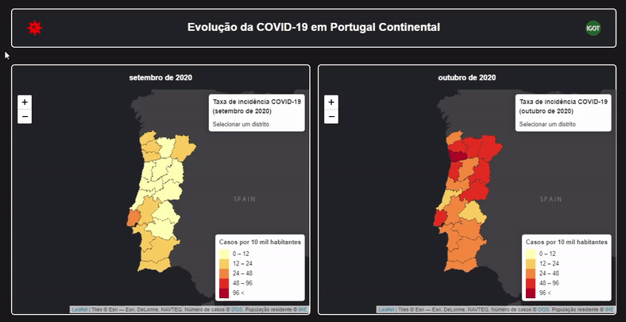

Evolução da COVID-19 em Portugal Continental (setembro a dezembro de 2020)¶
No âmbito da unidade curricular de WebSIG, lecionada no mestrado de Sistemas de Informação Geográfica e Modelação Territorial Aplicados ao Ordenamento, do Instituto de Geografia e Ordenamento do Território da Universidade de Lisboa, o principal objetivo deste projeto foi criar um website, com recurso às linguagens HTML (HyperText Markup Language), CSS (Cascading Style Sheets) e JavaScript, onde se encontrassem representados os quatro mapas da taxa de incidência de COVID-19, referentes a cada mês em estudo, permitindo assim a avaliação da evolução da pandemia em Portugal Continental, por distrito.
Para tal, o projeto foi dividido em três etapas:
Para o cálculo da taxa de incidência de COVID-19 por 10 mil habitantes, foram utilizados os dados disponibilizados pelo docente, sendo as suas fontes a Direção-Geral da Saúde (DGS) (relativamente ao número de casos de COVID-19 por distrito), e o Instituto Nacional de Estatística (INE) (relativamente à população residente em Portugal Continental em 2018); já para obter os limites administrativos de Portugal Continental, foi utilizada a Carta Administrativa Oficial de Portugal (CAOP) na versão 2020, da Direção-Geral do Território.
No final, este projeto permitiu consolidar os conhecimentos adquiridos na unidade curricular, nomeadamente a nível da criação de um servidor e de aplicações, e da elaboração e estruturação lógica do código nas linguagens HTML, CSS e JavaScript, podendo ser aplicados posteriormente noutros projetos de WebSIGs.
O website resultante destas etapas pode ser consultado a partir desta hiperligação, e interagido através da seguinte forma:
